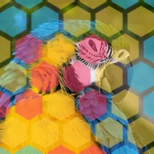

Zeshoekraster

Bedekt de laag met een raster van zeshoeken in één tot drie kleuren, met zachte randen en ruimte ertussen.
Instellingen
| Instelling | Type | Bereik | Standaard |
|---|---|---|---|
| Verschuiving | Punt (X, Y) | -4000 px tot 4000 px | 0 px, 0 px |
| Grootte | Getal | 4 tot 2000 | 80 |
| Uitrekken | Getal | 0.1 tot 10 | 1 |
| Hoek | Hoek | -3600° tot 3600° | 0° |
| Kleuren | Keuze | Eén, Twee, Drie | Drie |
| Kleur 1 | Kleur | – | #FF3A6E |
| Kleur 2 | Kleur | – | #35D0FF |
| Kleur 3 | Kleur | – | #FFD23F |
| Dekking | Getal | 0 tot 1 | 0.5 |
| Mengen | Keuze | Normaal, Vermenigvuldigen, Bleken, Bedekken, Zacht licht, Fel licht, Optellen, Donkerder, Lichter, Verschil, Kleur tegenhouden, Kleur doordrukken | Normaal |
| Tussenruimte | Getal | 0 tot 1 | 0.1 |
| Zachte rand | Getal | 0 tot 1 | 0.1 |